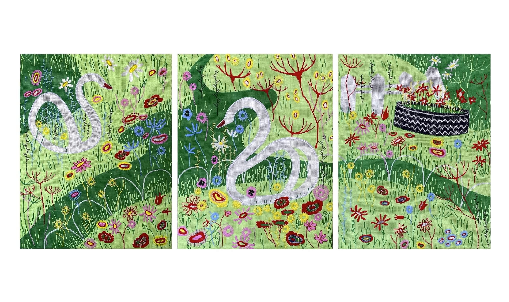

Дарика Бакеева. Без названия. Бишкек, Кыргызстан
Для участия в фестивале я предлагаю панно триптих, один из самых значимых проектов в моей практике. Панно состоит из трех сегментов, каждый из которых 100Х70 см. Панно изготовлено из трикотажного полотна с использованием ручной вышивки. Основная идея панно зафиксировать символы реальности которая меня окружает, а так же изучить феномен коллективной памяти. Триптих исследует механизмы формирования коллективной памяти через неофициальные памятники повседневности. Лебедь из покрышки выступает здесь как народный монумент, не закрепленный институциями, но устойчиво существующий в культурном воображении нескольких поколений. Работа рассматривает двор не как физическое пространство, а как территорию общих воспоминаний, где утилитарный отход превращается в носитель культурной памяти. Для меня этот образ связан с темой Unframed как с попыткой увидеть формы памяти и творчества, которые не вписываются в привычные рамки искусства, дизайна или культурного наследия. Лебедь из шины занимает промежуточное положение между утилитарным объектом и скульптурой, между украшением двора и памятником локальной идентичности.
- - -